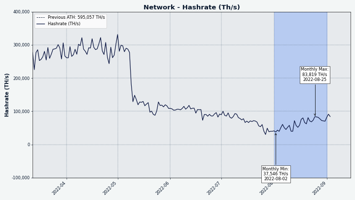

Decred月报 – 2022 年 8 月

_图片： @saender _
八月亮点：
- 提案、通过并部署了对 decred.org 网站的大幅修改。
- Politeia v1.4.0 已经发布，新功能之一是拥有 5 分钟的时间窗口来修改评论。
- DCRDEX v0.5.2 已经发布，并且已经可以由不想等待正在进行的 Decrediton 集成更新的交易者运行。
- 核心 Decred 软件 v1.7.4 作为源代码发布，只是为了修复已被 ASIC 矿工停止的测试网。
内容：
Politeia v1.4.0 发布
经过 8 个月的开发，新的 Politeia 版本上线了！亮点包括：
- 导入旧提案是此版本的主要工作。现在所有提案都可以在proposals.decred.org上找到，没有单独的存档网站。
- 评论可以在发布后的 5 分钟内立即编辑。
- 显示提案被审查的原因。
- 改进的草稿用户体验。
- 用于构建类似 Politeia 的应用程序的新架构的初步工作。
请参阅 politeia 和 politeiagui 存储库中的完整发行说明。
开发进展总结
除非另有说明，否则下面报告的工作为“合并至核心存储库”状态。这意味着该工作已完成、审查并集成到高级用户可以构建和运行的源代码中，但普通用户尚不可用。
dcrd
dcrd 是一个完整的节点实现，为 Decred 在全球的点对点网络提供支持。
dcrd v1.7.4 已发布修复测试网挖掘算法，详情如下。它是一个仅源代码版本，因为它主要面向开发人员。
合并master并向后移植到 v1.7.4 版本：
-
强制难度限制在测试网上设置。通常 ASIC 不会出现在测试网上，块是通过“缓慢”的 CPU 挖掘来挖掘的，因为需要高性能硬件来运行测试网是不合理的。也没有经济激励，因为测试网代币没有价值，而 ASIC 矿工有更好的选择来挖掘主网代币以获取利润。尽管如此，约 78 Th/s 的不寻常哈希率（相当于 2 个 Antminer DR5）加入了 Decred 测试网并开采了约 5 小时，这增加了难度并有效地停止了网络。为了限制 ASIC 可以在测试网上玩的游戏类型，引入了两条新规则：对最大允许难度的限制和在达到最大难度后限制出块率。即使在 GPU 和 ASIC 存在的情况下，这也应该保持 CPU 挖掘的可行性。
-
优化了选票数太少的区块处理，除了权益交易外，还可以将常规交易复制到替代区块模板中。这使得模板创建在重复支出的情况下更加健壮，并有助于确保将无效（投票不足）块中的所有交易添加到替代块模板中。以前所有交易也被复制，但只在下一个区块中复制，因此此更改消除了不必要的延迟。
合并master到 v1.8：
dcrwallet
dcrwallet 是命令行和图形钱包应用程序使用的钱包服务器。
合并master并向后移植到 v1.7.4 源版本：
- 导入任意公钥及其派生地址的实现方法。仅支持观察钱包。
- 在 dcrd 中实施的新规则中添加了硬分叉 testnet3的检查点。检查点用于将钱包推送到预期的未投票链上，因为它的总工作量比被重组的链少得多。
合并master：
- 将难度检查更新为 testnet3 上的新限制规则。
dcrctl
dcrctl 是 dcrd 和 dcrwallet 的命令行客户端。
Decrediton
Decrediton 是一款功能齐全的桌面钱包应用程序，集成了投票、StakeShuffle 混合、闪电网络、DEX 交易等。它可在有或没有完整区块链（SPV 模式）的情况下运行。
- 添加了使用 F5 键刷新 DEX 窗口的功能。
- 国库支出页面现在在测试网上使用测试网 Pi 密钥，并具有适当的链接以在 dcrd 的源代码中验证它们。
- 在“隐私”选项卡中将“Stakeshuffle++”更正为“StakeShuffle” 。
- ~4 个修复和其它内部更新。
Politeia
Politeia 是 Decred 的提案系统。它用于向 Decred 国库请求资金。
后端：
- 优化和改进的
dbutil -migrate命令验证（用于从一个用户数据库迁移到另一个）。 - 将应用程序版本存储为单个字符串以简化发布过程。
- Go 1.19 的各种更新（CI 配置、GitHub Actions、linter 和代码格式化）。
- 在启动时删除过期的用户会话。会话数据库的测试已被重写以修复许多问题。
- 更新
dbutil -dump了命令以与所有用户数据库实现一起使用。 - 冻结与不再允许更新的 Politeia 记录相对应的Trillian trees（例如已审查或已存档）。Politeia 对 Trillian 的使用与其预期的用例完全不同，它会导致高 CPU 负载。冻结一些树木应该会减少它。
当前图形用户界面：
新插件架构的 GUI 重制：
- 去重常见Babel和Jest配置。
- 向
pi插件添加了各种信息：提案状态、投票持续时间、法定人数、计费状态更改和错误消息。 - 添加了基于Cypress的端到端测试。
- 实施 RFP提案和提交。
- 从 pi-ui重用视图断点。断点控制使用哪种布局来匹配用户的屏幕大小。
- ~5 修复
- 代码重构和清理
pi-ui 共享库：

图片: Politeia 中更新的 RFP 提案视图。
闪电网络
dcrlnd 是 Decred 的闪电网络节点软件。LN 支持即时和低成本的交易。
LN 守护进程：
- 添加
EnforcePingRPC 调用。这允许调用者指示 dcrlnd ping 指定的对等点并等待响应。如果未能收到响应，则对等方断开连接。 - 为对等节点添加了停顿检测和断开连接。这需要处理运行 dcrlnd 的计算机被挂起，然后在经过足够的时间以使远程对等节点断开连接后恢复的情况。
- 将对等方空闲超时从 5 分钟减少到 1 分 30 秒。5 分钟的空闲超时时间过长，会妨碍正确及早检测停滞的对等方。
DCRDEX
DCRDEX 是一个非托管、尊重隐私的去信任交易所，由原子交换提供支持。
DCRDEX v0.5.2 已经发布！首先查看 v0.5.0 版本以获取从 v0.4 升级的功能、修复和说明。从 v0.5.2 版本开始，DCRDEX现在发布自己的二进制文件。与往常一样，强烈建议验证它们。
请注意，由于 DCRDEX 正在与其它组件（例如 Decrediton）协调，因此尚未发布任何公告。
v0.5 版本中包含的 8 月的更改：
- 将wiki内容移至主仓库中的docs/wiki。现在所有文档都在一个地方，并且可以通过拉取请求工作流程由更多贡献者更新和审查。
- 为 v0.5 版本重写了大部分自述文件。
- 更新为使用新的testnet3规则并将 LTC 区块浏览器从 bitaps.com 切换到 sochain.com。
- 使用
go:embed. - 更新了德语翻译。
- 代码维护。
v0.5 中包含的 8 月修复：
- 修复了几个客户端钱包挂起的问题。
- 修复了BTC SPV 钱包中的锁死。
- 修复了将钱包类型切换为SPV。
- 修复了交易引擎中的几个锁死的问题。
- 修复了创建钱包后必须手动刷新钱包页面的问题。
- 修复了已撤销匹配的匹配状态显示。
- 约 10 个其他客户端修复和约 2 个后端/内部修复。
v0.6 版本的面向用户的更改：
- 最终用户（交易者）文档移至其自己的文档。
- 通过使用纪元的第一个和最后一个匹配价格作为蜡烛的开始和结束价格，提高了烛台图表的准确性。
- 重新设计了钱包页面。新样式响应迅速，可适应台式机、平板电脑和移动设备的屏幕尺寸。
- 调整订单取消政策以惩罚过快取消。如果订单至少存在一个完整的时期，它仍然可以“免费”取消（不会损害用户的声誉得分）。这应该会改善人类的交易体验。
- 为 DCR 和 ETH实施了在线钱包重新配置。它允许跨钱包配置更改正确跟踪锁定的硬币。
v0.6 版本的后端和开发人员更改：
- 服务器安装指南移到own文档中。
- 更新了对最新btcsuite、go-ethereum、go-bip39 和最低 Go 1.18 的依赖项。
- 添加了开始编写模糊测试的指南。
- 自动Markdown linting以确保格式一致。
- 交易等待时间由服务器操作员配置。这是服务器在出错之前搜索客户端报告的事务的最长时间。
- 更新了 v0.6 开发周期的Node.js依赖项。
- 翻译后的页面模板现在在运行时生成。它消除了手动重新生成它们的需要，并简化了更新翻译或添加新语言。
- 支持dcrd 和 dcrwallet 的已发布 v1.7 和开发中的 v1.8 版本。
- 代码维护。
- ~11 个客户端修复和 ~2 个后端/内部修复
以太坊支持：
- 在 UI 上启用以太坊代币交易，为代币钱包创建新的钱包流程，其中包括同步父链（例如以太坊）的步骤。

图片: 平板设备的 DCRDEX 布局。
GoDCR
GoDCR 是一款轻量级桌面 GUI 钱包，集成了质押、隐私、Politeia 投票、共识投票等功能。
- 禁用仅观察钱包的接收、发送和混币页面。
- 将钱包设置页面更新为 v2 UI 设计。
- 将顶级设置页面更新为 v2 UI 设计。
- 实施国库支出布局。
- 更新了顶部栏上的颜色和图标。
- 复了解析特定 Markdown 位时提案详细信息崩溃的问题。
- 修复了钱包恢复完成后应用程序崩溃的问题。
- 修复了暗模式下的顶栏文本颜色。
dcrlibwallet 共享库：
- 添加了在本地和管理票证的 VSP中保存 TSpend 投票策略的功能。
- 更新了 dcrwallet 依赖项。
- 将 Politeia 提取到一个独立的包中。
- 实现了用于从外部服务（例如 dcrdata 块浏览器和交换）获取数据的 API 。

图片：GoDCR 设置页面。
dcrdata
dcrdata Decred 区块链和链下数据（如 Politeia 提案、市场等）浏览器。
decred.org
dcrweb 是 decred.org 网站的源代码。
Decred.org 已经按照D.R.E.A.M. 2: Dream Harder提案中的利益相关者的批准进行了彻底改革。新标题是“Decred - Money Evovled”。
网站变更摘要：
- 彻底改革主题和风格。
- 使用强烈的词语和简单的语言更新消息。
- 支持和出版物部分添加到社区页面。
- 删除子页面
/chat（它重定向到chat.decred.org）。 - 删除
/brief,/sustainable,/adaptable,/security, 和/history子页面。 - 从VSP列表中删除了旧VSP池。
技术细节：
- 站点尽可能地在没有 JavaScript 的情况下实现。JS 用于：移动设备顶部导航栏、加载 VSP 表格、主页上特定于操作系统的下载链接。
- 以前的站点是建立在拖放式编辑器 Webflow 之上的。Webflow CSS 已被 Bootstrap 取代。
- 所有站点 CSS（包括 Bootstrap）都是从 SCSS 源代码编译的。
- 新站点不包含任何视频或 Lottie 动画，因此所有 CSS/JS 已被删除。
- 合并数据文件(
apps.yml,current_release.yml和links.yml)links.yml以消除重复。所有钱包链接和版本现在都驻留在一个文件中wallets.yml。 - SourceSansPro 字体替换为 Poppins 和 Inter 的混合字体。SourceCodePro 仍然是等宽字体。
网其它改动：
- 更新了Matrix支持链接。现在decred.org/matrix-支持重定向到我们自托管 Element 服务器中的#support 聊天室。
- 删除了 7 个已失效的交易所和钱包。更新了链接。

图片：新的 decred.org 设计。
其它
人员
欢迎新的首次贡献者将代码合并到 master：
- Abirdcfly (dcrd)
- herculesbrito (Decrediton)
- norwnd (dcrd)
Decred 社区成员João Paulo Sant'Anna（@DecredBR的策展人）和 Philemon（DCRDEX、dcrdata 和其他项目的开发人员）在 Decred 杂志上接受了@phoenixgreen 的采访。
截至 9 月 1 日的社区统计数据（与 8 月 1 日相比）：
- Twitter 粉丝: 54,751 (+445)
- Reddit 订阅: 12,647 (+14)
- Matrix #general 用户: 714 (+7)
- Discord 用户: 1,796 (+31)
- Telegram 用户: 2,884 (+111)
- YouTube 订阅: 4,640 (+10), 观看: 214K (+2K)
治理
8 月，新国库收到 9,219 DCR，价值 29.4 万美元，8 月平均汇率为 31.93 美元。3,788 DCR 用于支付承包商费用，按 8 月的汇率计算价值 12.1 万美元，按 7 月的 23.93 美元计费汇率计算价值 9.1 万美元。
国库支出交易于 8 月 27 日开采，它有 23 个输出，范围从 0.7 DCR 到 1,168 DCR 。该交易以 6,795 票赞成票和 0 票反对票获得批准。
截至 9 月 3 日，旧国库和新国库的总余额为 810,984 DCR（2430 万美元，29.95 美元）。
一项提案于 8 月发布并获得批准。D.R.E.A.M. 2: Dream Harder 由 @jy-p 提交，与 @jholdstock、@jz 和 @saender 合作，按照D.R.E.A.M. proposal的思路制作了一个修改后的 decred.org 原型网站，该提案获得了最佳投票响应（48% 的批准）但没有通过 2020 年 9 月决定的 decred.org messaging RFP。目前以 7,660 美元（其中 3,000 美元保留用于翻译）的成本部署新设计/消息的提案以 97% 的赞成票获得批准和 59% 的投票率。
有关本月提案的更多详细信息，请参见 Politeia Digest 第 53 期。
网络
全网算力: 8 月的算力以 44 Ph/s开启，以 70 Ph/s结束，整月最低为 38 Ph/s，最高为 84 Ph/s。

图片：哈希率从低点回升。
9 月 1 日矿池报告的 75 Ph/s 算力分布：Poolin 65%，F2Pool 26%，BTC.com 5.5%，AntPool 3.5%，CoinMine 0.6%。
截至 9 月 1 日实际开采的 1,000 个区块分布：Poolin 61%，BTC.com 5%，CoinMine 0.7%，未知 33%。

图片：矿池算力分布。
Staking: 票价在 220-239 DCR 之间变化，30 天平均价格为 230.2 DCR (+3.4)。
锁定数量为 922-939 万 DCR，这意味着 63.9-65.0% 的流通供应量参与了Proof of Stake。这是staing参与和票池价值的历史新高。
VSP: 在 9 月 1 日，约 7,050 (-120) 张现场门票由列出的vspd 服务器管理。这 18 个 VSP 共同管理了 17.3% 的选票池 (-0.1%)。

图片：VSP 管理的选票分布。
节点: Decred Mapper在 9 月 1 日捕获的节点版本（总共 176 个，仅 dcrd）：v1.7.1 - 31%，v1.7.2 - 29%，v1.7.4 - 18%，v1.7.0 - 8.5%，v1.8.0开发版本 - 3%，v1.7.0 开发版本 - 1%，其它 - 10%。

图片：dcrd 节点版本分布。
混币的份额在 60.8-60.9% 之间变化。每日混合量在 233-546K DCR 之间变化。
截至 9 月 1 日， Decred 的闪电网络已发现 42 个节点 (-3)、68 个通道 (-10)，总容量为 35.4 DCR (-1.5)。
生态系统
VSP synergy-crypto.net 在其网站上宣布它正在关闭并且不接受新票。已支付费用的门票将照常投票（截至 9 月 1 日为 180 张门票）。
ViaBTC于8月5日宣布，他们将于8月10日关闭其DCR矿池。用户被要求在8月17日之前提取或转换他们的DCR，在该截止日期之前剩余的任何DCR将自动转换为USDT。
在 decred.org 交易所页面（CoinSwitch、Sequoir（ex Vertbase）、Evercoin、Bitcoin.com）和钱包页面（Ownbit、AnyBit、Atomic Wallet、Evercoin ）总共删除了 7 个已失效的服务。截至 9 月 12 日，仍有 22 家第三方交易所和 6 家第三方钱包上市。
警告：Decred Journal 的作者不知道上述任何服务的可信度。在将您的个人信息或资产信任给任何实体之前，请先进行自己的研究。
加入我们的#ecosystem聊天，关注 Decred 生态系统更新。
外展
Monde PR的成就：
- 将 Decred 推向 2 个 PR 机会。
- 回复了 3 个评论请求。
获得以下新闻文章：
- Forbes Advisor中的一篇文章，其中包含 @jz 对 meme 硬币优点的评论。该作品被联合发布给包括纳斯达克在内的 3 家出版物。
- Cointelegraph上的一篇文章以@jy-p 的评论为特色，内容涉及比特币的闪电网络如何与 Solana 和 Visa 相抗衡。这篇文章被联合发布给 30 家出版物，包括Bitcoin Insider和Crypto News Canada。
- Cointelegraph 的文章也以葡萄牙语出现在Cointelegraph Brazil上。
媒体
Decred 杂志 8 月的参与度统计数据：
- DM上的文章总数：305
- 通讯订阅者：55
- 发送的新帖子和时事通讯：13
- 积极的社交媒体活动：5
- 社交媒体帖子：75
- 帖子点击次数：224
- 喜欢：412
- 转发推文：73
- 所有平台和账户的社交媒体关注者：927
非常欢迎 Twitter 用户通过关注、点赞和转发来支持@Decredmagazine，以帮助传播信息。
精选文章：
- 介绍 Decred 社区成员 João Paulo Sant'Anna @phoenixgreen
- 介绍 Decred 开发者 Philemon @phoenixgreen
- Decred 如何为巴西的选举做出更透明的贡献 @João
- 点对点电子公司 @Tivra
- 拐点技术分析 @Applesaucesome
视频:
- 去中心化的财政支出 - Decred Fundamentals @phoenixgreen
- DCRDATA Decred 的国库 - Decred Fundamentals @phoenixgreen
- 为什么Decred会爆炸！$DCR 加密价格预测！ Minted Max
- Decred 和 web3 的未来 @phoenixgreen @Exitus
- Decred 新闻更新 - 许多开发开发工作激增 - LN、DCRDEX、Politeia、DAO 等 @Exitus
艺术娱乐:
- 新网站 TikTok @DCRDajana
- Decred Heartbeat @OfficialCryptos
翻译:
- Decred Journal 2022 年 4 月至 7 月共有 6 个新翻译。感谢@arij（阿拉伯语）、@Dominic（中文）和@kozel（波兰语）！
非英语内容：:
- 什么是 Decred 数字代币项目？ by Be Coin (Arabic)
- DCR DecreD Explose j'achete ou pas? Crypto for EveryOne （法语，“Decred 爆炸式增长，购买与否？”）
讨论
选定的 Reddit 帖子：
选定的 Twitter 讨论：
- @elima_iii 有他的研究论文草稿，重点关注Decred 和提议的负责任金融创新法案。.
- @phoenixgreen 讲述了他使用 DCRDEX使用平台的原子交换技术为 BTC 出售 DCR 的经验。
市场
8 月 DCR 的交易价格在 25.60-70.40 美元 / 0.00114-0.00306 比特币之间。平均每日价格为 31.93 美元。
@Applesaucesome 对加密货币和股票市场的另一篇评论提到了 8 月 DCR 暴涨中的异常数字：

那支蜡烛的体积很大。我的意思是巨大的。仅在 DCR/USDT 配对中，就有近 200 万个 DCR 来回交易。这是整个供应量的 14%。注意：这并不意味着买入或卖出了很多，而是买入+卖出的总和。
以下不是财务建议：
总之，市场可能会回落，但如果你是多头，那么它可能会提供最后一个稳固的买入机会。如果你是熊，那么这将是卖出更多的时候。加密现在看起来仍然很糟糕，但我不卖。

图片：DCRDEX 月交易量（美元）。
相关外部信息
以太坊混合服务 Tornado Cash 被美国财政部添加到 OFAC 制裁名单中，因为它在促进朝鲜黑客收益的洗钱方面发挥了作用。制裁涵盖了与混频器相关的一组以太坊地址，在制裁公布后，一些巨魔立即从 Tornado 向名人的钱包发送少量混合 ETH 以污染他们的资金。Circle 迅速将属于 Tornado 用户的 7.5 万美元 USDC列入黑名单。GitHub删除了 Tornado Cash 的存储库以及至少 3 名开发人员的帐户。
两天后，在 Tornado Cash 上工作的开发人员 Alexey Pertsev在阿姆斯特丹被荷兰财政信息和调查局逮捕，罪名是涉嫌帮助洗钱。荷兰当局将 Pertsev 关押 3 个月，直到可以安排审判，但到目前为止，他们还没有被指控犯有具体罪行，他们的妻子否认与俄罗斯间谍活动有关。
Solana（Sabre 协议）上的整个 DeFi 生态系统被揭露是两兄弟的作品，大量虚假的开发者账户，以及一些对锁定在协议中的资产进行双重或三重计算的技术。
自 2019 年推出以来，Maker DAO 一直在支持 DAI 稳定币，其治理有助于确定 MKR 生态系统的发展方式。Maker DAO 治理的大多数参与者似乎都同意它进展不顺利，需要改变，但对于应该如何改变存在分歧。在最近的播客辩论中，MKR 创始人 Rune Christensen 提出了一个案例，即为 DAO 工作的人们变得过于自在，并试图以适合自己的方式扩展组织。Hasu（化名密码研究员，MKR 治理代表）代表了 DAO 贡献者的一方，他们可以看到 MKR 持有者被提交给他们并不总是很适合回答的次优提案决策 - 但有几个提案可以创建新的核心组，这将提供某种类型的对代币持有者的情报最近被拒绝了。一关于该主题的Twitter 线程添加了第三派系，即去中心化极端主义者，他们希望看到智能合约被锁定或“僵化”，以便它们无法因监管变化而改变。然而，Rune 是主角，他从半退休状态回归预示着方向的改变，偏离了 DAO 的贡献者以及在某些情况下 VC 支持者的计划。Rune提供了一个史诗般的“终结游戏”计划，但它非常冗长和复杂，分成几个长论坛帖子，所以不清楚有多少人支持。
泄露的视频已经流传开来，律师 Kyle Roche 吹嘘他们与 Ava Labs（Avalanche 网络）的合作，其中包括将其他竞争项目与无聊的诉讼捆绑在一起。Ava 实验室否认了他们与 Crypto Leaks 发布的公司的安排的耸人听闻的说法，凯尔·罗氏 (Kyle Roche) 已经退出了上述一些集体诉讼。
这就是八月的全部内容。在我们的#journal聊天室中分享您对下一期的更新。
关于月报
这是 Decred Journal 第 50 期。此处提供所有问题、镜像和翻译的索引。
来自第三方的大多数信息在经过最低限度的健全性检查后直接从源转发。Decred 月报的作者无法验证所有声明。请提防诈骗并进行自己的研究。
感谢 (字母排列):
- 写作、编辑、出版： bee, bochinchero, Exitus, jz, l1ndseymm, phoenixgreen, richardred
- 评论和反馈： davecgh
- 资助：Decred 利益相关者